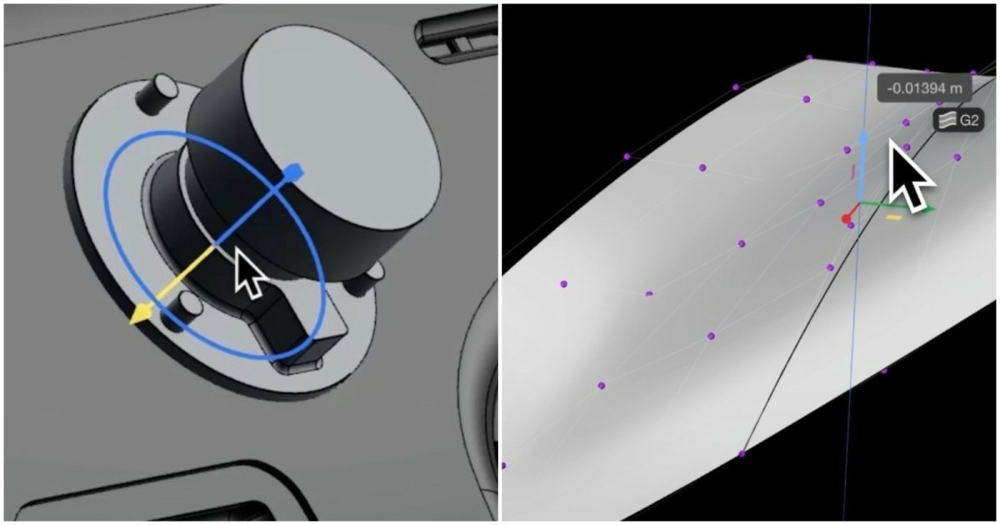

Plasticity 2026.2：新增資產重用、曲率分析與 Class A 曲面對齊控制
Plasticity 2026.2 新增可匯出與拖放重用零件的 Assets 系統、三種模式的曲率分析 shader，以及 Edge Align 的 Collinear 與 Skew 選項；Studio 版另有 Constraint System 和 Project Align。

Shader ★★★★☆
完整分析
CAD 工作流
Outliner 的 Assets 分頁可標記、匯出與分享螺栓等重用零件，再直接拖入 viewport；PolySpline 也能在 Point Selection Mode 編輯控制頂點，並新增網格吸附視覺提示。
曲面製作影響
曲率分析提供 Gaussian、Mean 與 Max 模式；Edge Align 的 Collinear solver 可用對稱或非對稱方式控制兩曲面對齊，Skew 邊界選項則調整邊界傾斜程度，直接服務 Class A 曲面檢查與修整。
版本限制與驗證
Constraint System 與 Project Align 僅限 Studio 版，而且約束目前不會隨檔案保存；團隊導入前應先確認授權版本，並驗證重新開檔後的約束與曲面對齊交接方式。
BRIEF｜來源已驗證；證據深度較有限，完整分析會明確區分已知資訊與待驗證事項。